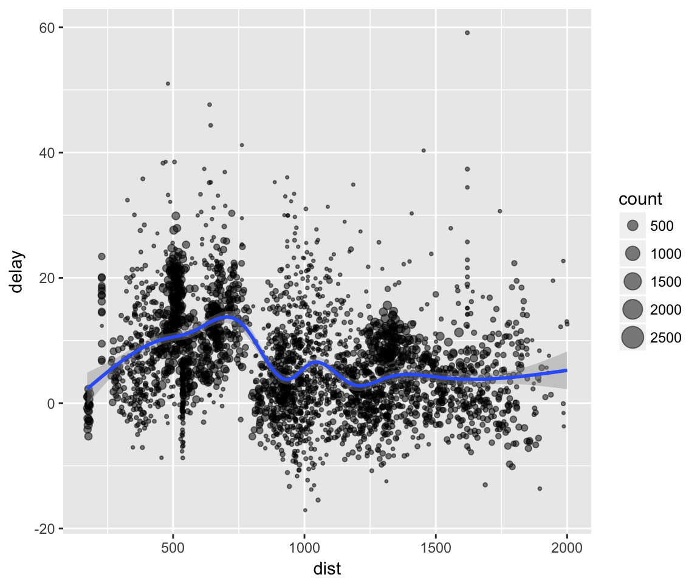

When working with data you must:
Figure out what you want to do.
Describe those tasks in the form of a computer program.
Execute the program.
The dplyr package makes these steps fast and easy:
By constraining your options, it simplifies how you can think about common data manipulation tasks.
It provides simple “verbs”, functions that correspond to the most common data manipulation tasks, to help you translate those thoughts into code.
It uses efficient data storage backends, so you spend less time waiting for the computer.
This document introduces you to dplyr’s basic set of tools, and shows you how to apply them to data frames. Other vignettes provide more details on specific topics:
databases: Besides in-memory data frames, dplyr also connects to out-of-memory, remote databases. And by translating your R code into the appropriate SQL, it allows you to work with both types of data using the same set of tools.
benchmark-baseball: see how dplyr compares to other tools for data manipulation on a realistic use case.
window-functions: a window function is a variation on an aggregation function. Where an aggregate function uses n inputs to produce 1 output, a window function uses n inputs to produce n outputs.
To explore the basic data manipulation verbs of dplyr, we’ll start with the built in nycflights13 data frame. This dataset contains all 336776 flights that departed from New York City in 2013. The data comes from the US Bureau of Transportation Statistics, and is documented in ?nycflights13
library(nycflights13)
dim(flights)
#> [1] 336776 19
head(flights)
#> # A tibble: 6 × 19
#> year month day dep_time sched_dep_time dep_delay arr_time
#> <int> <int> <int> <int> <int> <dbl> <int>
#> 1 2013 1 1 517 515 2 830
#> 2 2013 1 1 533 529 4 850
#> 3 2013 1 1 542 540 2 923
#> 4 2013 1 1 544 545 -1 1004
#> # ... with 2 more rows, and 12 more variables: sched_arr_time <int>,
#> # arr_delay <dbl>, carrier <chr>, flight <int>, tailnum <chr>,
#> # origin <chr>, dest <chr>, air_time <dbl>, distance <dbl>, hour <dbl>,
#> # minute <dbl>, time_hour <dttm>dplyr can work with data frames as is, but if you’re dealing with large data, it’s worthwhile to convert them to a tbl_df: this is a wrapper around a data frame that won’t accidentally print a lot of data to the screen.
Dplyr aims to provide a function for each basic verb of data manipulation:
filter() (and slice())arrange()select() (and rename())distinct()mutate() (and transmute())summarise()sample_n() (and sample_frac())If you’ve used plyr before, many of these will be familar.
filter()
filter() allows you to select a subset of rows in a data frame. The first argument is the name of the data frame. The second and subsequent arguments are the expressions that filter the data frame:
For example, we can select all flights on January 1st with:
filter(flights, month == 1, day == 1)
#> # A tibble: 842 × 19
#> year month day dep_time sched_dep_time dep_delay arr_time
#> <int> <int> <int> <int> <int> <dbl> <int>
#> 1 2013 1 1 517 515 2 830
#> 2 2013 1 1 533 529 4 850
#> 3 2013 1 1 542 540 2 923
#> 4 2013 1 1 544 545 -1 1004
#> # ... with 838 more rows, and 12 more variables: sched_arr_time <int>,
#> # arr_delay <dbl>, carrier <chr>, flight <int>, tailnum <chr>,
#> # origin <chr>, dest <chr>, air_time <dbl>, distance <dbl>, hour <dbl>,
#> # minute <dbl>, time_hour <dttm>This is equivalent to the more verbose code in base R:
flights[flights$month == 1 & flights$day == 1, ]filter() works similarly to subset() except that you can give it any number of filtering conditions, which are joined together with & (not && which is easy to do accidentally!). You can also use other boolean operators:
filter(flights, month == 1 | month == 2)To select rows by position, use slice():
slice(flights, 1:10)
#> # A tibble: 10 × 19
#> year month day dep_time sched_dep_time dep_delay arr_time
#> <int> <int> <int> <int> <int> <dbl> <int>
#> 1 2013 1 1 517 515 2 830
#> 2 2013 1 1 533 529 4 850
#> 3 2013 1 1 542 540 2 923
#> 4 2013 1 1 544 545 -1 1004
#> # ... with 6 more rows, and 12 more variables: sched_arr_time <int>,
#> # arr_delay <dbl>, carrier <chr>, flight <int>, tailnum <chr>,
#> # origin <chr>, dest <chr>, air_time <dbl>, distance <dbl>, hour <dbl>,
#> # minute <dbl>, time_hour <dttm>arrange()
arrange() works similarly to filter() except that instead of filtering or selecting rows, it reorders them. It takes a data frame, and a set of column names (or more complicated expressions) to order by. If you provide more than one column name, each additional column will be used to break ties in the values of preceding columns:
arrange(flights, year, month, day)
#> # A tibble: 336,776 × 19
#> year month day dep_time sched_dep_time dep_delay arr_time
#> <int> <int> <int> <int> <int> <dbl> <int>
#> 1 2013 1 1 517 515 2 830
#> 2 2013 1 1 533 529 4 850
#> 3 2013 1 1 542 540 2 923
#> 4 2013 1 1 544 545 -1 1004
#> # ... with 336,772 more rows, and 12 more variables: sched_arr_time <int>,
#> # arr_delay <dbl>, carrier <chr>, flight <int>, tailnum <chr>,
#> # origin <chr>, dest <chr>, air_time <dbl>, distance <dbl>, hour <dbl>,
#> # minute <dbl>, time_hour <dttm>Use desc() to order a column in descending order:
arrange(flights, desc(arr_delay))
#> # A tibble: 336,776 × 19
#> year month day dep_time sched_dep_time dep_delay arr_time
#> <int> <int> <int> <int> <int> <dbl> <int>
#> 1 2013 1 9 641 900 1301 1242
#> 2 2013 6 15 1432 1935 1137 1607
#> 3 2013 1 10 1121 1635 1126 1239
#> 4 2013 9 20 1139 1845 1014 1457
#> # ... with 336,772 more rows, and 12 more variables: sched_arr_time <int>,
#> # arr_delay <dbl>, carrier <chr>, flight <int>, tailnum <chr>,
#> # origin <chr>, dest <chr>, air_time <dbl>, distance <dbl>, hour <dbl>,
#> # minute <dbl>, time_hour <dttm>dplyr::arrange() works the same way as plyr::arrange(). It’s a straightforward wrapper around order() that requires less typing. The previous code is equivalent to:
flights[order(flights$year, flights$month, flights$day), ]
flights[order(flights$arr_delay, decreasing = TRUE), ] or flights[order(-flights$arr_delay), ]select()
Often you work with large datasets with many columns but only a few are actually of interest to you. select() allows you to rapidly zoom in on a useful subset using operations that usually only work on numeric variable positions:
# Select columns by name
select(flights, year, month, day)
#> # A tibble: 336,776 × 3
#> year month day
#> <int> <int> <int>
#> 1 2013 1 1
#> 2 2013 1 1
#> 3 2013 1 1
#> 4 2013 1 1
#> # ... with 336,772 more rows
# Select all columns between year and day (inclusive)
select(flights, year:day)
#> # A tibble: 336,776 × 3
#> year month day
#> <int> <int> <int>
#> 1 2013 1 1
#> 2 2013 1 1
#> 3 2013 1 1
#> 4 2013 1 1
#> # ... with 336,772 more rows
# Select all columns except those from year to day (inclusive)
select(flights, -(year:day))
#> # A tibble: 336,776 × 16
#> dep_time sched_dep_time dep_delay arr_time sched_arr_time arr_delay
#> <int> <int> <dbl> <int> <int> <dbl>
#> 1 517 515 2 830 819 11
#> 2 533 529 4 850 830 20
#> 3 542 540 2 923 850 33
#> 4 544 545 -1 1004 1022 -18
#> # ... with 336,772 more rows, and 10 more variables: carrier <chr>,
#> # flight <int>, tailnum <chr>, origin <chr>, dest <chr>, air_time <dbl>,
#> # distance <dbl>, hour <dbl>, minute <dbl>, time_hour <dttm>This function works similarly to the select argument in base::subset(). Because the dplyr philosophy is to have small functions that do one thing well, it’s its own function in dplyr.
There are a number of helper functions you can use within select(), like starts_with(), ends_with(), matches() and contains(). These let you quickly match larger blocks of variables that meet some criterion. See ?select for more details.
You can rename variables with select() by using named arguments:
select(flights, tail_num = tailnum)
#> # A tibble: 336,776 × 1
#> tail_num
#> <chr>
#> 1 N14228
#> 2 N24211
#> 3 N619AA
#> 4 N804JB
#> # ... with 336,772 more rowsBut because select() drops all the variables not explicitly mentioned, it’s not that useful. Instead, use rename():
rename(flights, tail_num = tailnum)
#> # A tibble: 336,776 × 19
#> year month day dep_time sched_dep_time dep_delay arr_time
#> <int> <int> <int> <int> <int> <dbl> <int>
#> 1 2013 1 1 517 515 2 830
#> 2 2013 1 1 533 529 4 850
#> 3 2013 1 1 542 540 2 923
#> 4 2013 1 1 544 545 -1 1004
#> # ... with 336,772 more rows, and 12 more variables: sched_arr_time <int>,
#> # arr_delay <dbl>, carrier <chr>, flight <int>, tail_num <chr>,
#> # origin <chr>, dest <chr>, air_time <dbl>, distance <dbl>, hour <dbl>,
#> # minute <dbl>, time_hour <dttm>Use distinct()to find unique values in a table:
distinct(flights, tailnum)
#> # A tibble: 4,044 × 1
#> tailnum
#> <chr>
#> 1 N14228
#> 2 N24211
#> 3 N619AA
#> 4 N804JB
#> # ... with 4,040 more rows
distinct(flights, origin, dest)
#> # A tibble: 224 × 2
#> origin dest
#> <chr> <chr>
#> 1 EWR IAH
#> 2 LGA IAH
#> 3 JFK MIA
#> 4 JFK BQN
#> # ... with 220 more rows(This is very similar to base::unique() but should be much faster.)
mutate()
Besides selecting sets of existing columns, it’s often useful to add new columns that are functions of existing columns. This is the job of mutate():
mutate(flights,
gain = arr_delay - dep_delay,
speed = distance / air_time * 60)
#> # A tibble: 336,776 × 21
#> year month day dep_time sched_dep_time dep_delay arr_time
#> <int> <int> <int> <int> <int> <dbl> <int>
#> 1 2013 1 1 517 515 2 830
#> 2 2013 1 1 533 529 4 850
#> 3 2013 1 1 542 540 2 923
#> 4 2013 1 1 544 545 -1 1004
#> # ... with 336,772 more rows, and 14 more variables: sched_arr_time <int>,
#> # arr_delay <dbl>, carrier <chr>, flight <int>, tailnum <chr>,
#> # origin <chr>, dest <chr>, air_time <dbl>, distance <dbl>, hour <dbl>,
#> # minute <dbl>, time_hour <dttm>, gain <dbl>, speed <dbl>dplyr::mutate() works the same way as plyr::mutate() and similarly to base::transform(). The key difference between mutate() and transform() is that mutate allows you to refer to columns that you’ve just created:
mutate(flights,
gain = arr_delay - dep_delay,
gain_per_hour = gain / (air_time / 60)
)
#> # A tibble: 336,776 × 21
#> year month day dep_time sched_dep_time dep_delay arr_time
#> <int> <int> <int> <int> <int> <dbl> <int>
#> 1 2013 1 1 517 515 2 830
#> 2 2013 1 1 533 529 4 850
#> 3 2013 1 1 542 540 2 923
#> 4 2013 1 1 544 545 -1 1004
#> # ... with 336,772 more rows, and 14 more variables: sched_arr_time <int>,
#> # arr_delay <dbl>, carrier <chr>, flight <int>, tailnum <chr>,
#> # origin <chr>, dest <chr>, air_time <dbl>, distance <dbl>, hour <dbl>,
#> # minute <dbl>, time_hour <dttm>, gain <dbl>, gain_per_hour <dbl>transform(flights,
gain = arr_delay - delay,
gain_per_hour = gain / (air_time / 60)
)
#> Error: object 'gain' not foundIf you only want to keep the new variables, use transmute():
transmute(flights,
gain = arr_delay - dep_delay,
gain_per_hour = gain / (air_time / 60)
)
#> # A tibble: 336,776 × 2
#> gain gain_per_hour
#> <dbl> <dbl>
#> 1 9 2.378855
#> 2 16 4.229075
#> 3 31 11.625000
#> 4 -17 -5.573770
#> # ... with 336,772 more rowssummarise()
The last verb is summarise(). It collapses a data frame to a single row (this is exactly equivalent to plyr::summarise()):
summarise(flights,
delay = mean(dep_delay, na.rm = TRUE))
#> # A tibble: 1 × 1
#> delay
#> <dbl>
#> 1 12.63907Below, we’ll see how this verb can be very useful.
sample_n() and sample_frac()
You can use sample_n() and sample_frac() to take a random sample of rows: use sample_n() for a fixed number and sample_frac() for a fixed fraction.
sample_n(flights, 10)
#> # A tibble: 10 × 19
#> year month day dep_time sched_dep_time dep_delay arr_time
#> <int> <int> <int> <int> <int> <dbl> <int>
#> 1 2013 9 6 1357 1359 -2 1610
#> 2 2013 11 18 2058 2107 -9 2301
#> 3 2013 6 28 954 959 -5 1205
#> 4 2013 6 30 1711 1706 5 2215
#> # ... with 6 more rows, and 12 more variables: sched_arr_time <int>,
#> # arr_delay <dbl>, carrier <chr>, flight <int>, tailnum <chr>,
#> # origin <chr>, dest <chr>, air_time <dbl>, distance <dbl>, hour <dbl>,
#> # minute <dbl>, time_hour <dttm>
sample_frac(flights, 0.01)
#> # A tibble: 3,368 × 19
#> year month day dep_time sched_dep_time dep_delay arr_time
#> <int> <int> <int> <int> <int> <dbl> <int>
#> 1 2013 1 19 624 625 -1 857
#> 2 2013 5 13 1334 1338 -4 1433
#> 3 2013 4 24 1508 1447 21 1659
#> 4 2013 1 29 1103 1006 57 1212
#> # ... with 3,364 more rows, and 12 more variables: sched_arr_time <int>,
#> # arr_delay <dbl>, carrier <chr>, flight <int>, tailnum <chr>,
#> # origin <chr>, dest <chr>, air_time <dbl>, distance <dbl>, hour <dbl>,
#> # minute <dbl>, time_hour <dttm>Use replace = TRUE to perform a bootstrap sample. If needed, you can weight the sample with the weight argument.
You may have noticed that the syntax and function of all these verbs are very similar:
The first argument is a data frame.
The subsequent arguments describe what to do with the data frame. Notice that you can refer to columns in the data frame directly without using $.
The result is a new data frame
Together these properties make it easy to chain together multiple simple steps to achieve a complex result.
These five functions provide the basis of a language of data manipulation. At the most basic level, you can only alter a tidy data frame in five useful ways: you can reorder the rows (arrange()), pick observations and variables of interest (filter() and select()), add new variables that are functions of existing variables (mutate()), or collapse many values to a summary (summarise()). The remainder of the language comes from applying the five functions to different types of data. For example, I’ll discuss how these functions work with grouped data.
These verbs are useful on their own, but they become really powerful when you apply them to groups of observations within a dataset. In dplyr, you do this with the group_by() function. It breaks down a dataset into specified groups of rows. When you then apply the verbs above on the resulting object they’ll be automatically applied “by group”. Most importantly, all this is achieved by using the same exact syntax you’d use with an ungrouped object.
Grouping affects the verbs as follows:
grouped select() is the same as ungrouped select(), except that grouping variables are always retained.
grouped arrange() orders first by the grouping variables
mutate() and filter() are most useful in conjunction with window functions (like rank(), or min(x) == x). They are described in detail in vignette("window-functions").
sample_n() and sample_frac() sample the specified number/fraction of rows in each group.
slice() extracts rows within each group.
summarise() is powerful and easy to understand, as described in more detail below.
In the following example, we split the complete dataset into individual planes and then summarise each plane by counting the number of flights (count = n()) and computing the average distance (dist = mean(Distance, na.rm = TRUE)) and arrival delay (delay = mean(ArrDelay, na.rm = TRUE)). We then use ggplot2 to display the output.
by_tailnum <- group_by(flights, tailnum)
delay <- summarise(by_tailnum,
count = n(),
dist = mean(distance, na.rm = TRUE),
delay = mean(arr_delay, na.rm = TRUE))
delay <- filter(delay, count > 20, dist < 2000)
# Interestingly, the average delay is only slightly related to the
# average distance flown by a plane.
ggplot(delay, aes(dist, delay)) +
geom_point(aes(size = count), alpha = 1/2) +
geom_smooth() +
scale_size_area()
You use summarise() with aggregate functions, which take a vector of values and return a single number. There are many useful examples of such functions in base R like min(), max(), mean(), sum(), sd(), median(), and IQR(). dplyr provides a handful of others:
n(): the number of observations in the current group
n_distinct(x):the number of unique values in x.
first(x), last(x) and nth(x, n) - these work similarly to x[1], x[length(x)], and x[n] but give you more control over the result if the value is missing.
For example, we could use these to find the number of planes and the number of flights that go to each possible destination:
destinations <- group_by(flights, dest)
summarise(destinations,
planes = n_distinct(tailnum),
flights = n()
)
#> # A tibble: 105 × 3
#> dest planes flights
#> <chr> <int> <int>
#> 1 ABQ 108 254
#> 2 ACK 58 265
#> 3 ALB 172 439
#> 4 ANC 6 8
#> # ... with 101 more rowsYou can also use any function that you write yourself. For performance, dplyr provides optimised C++ versions of many of these functions. If you want to provide your own C++ function, see the hybrid-evaluation vignette for more details.
When you group by multiple variables, each summary peels off one level of the grouping. That makes it easy to progressively roll-up a dataset:
daily <- group_by(flights, year, month, day)
(per_day <- summarise(daily, flights = n()))
#> Source: local data frame [365 x 4]
#> Groups: year, month [?]
#>
#> year month day flights
#> <int> <int> <int> <int>
#> 1 2013 1 1 842
#> 2 2013 1 2 943
#> 3 2013 1 3 914
#> 4 2013 1 4 915
#> # ... with 361 more rows
(per_month <- summarise(per_day, flights = sum(flights)))
#> Source: local data frame [12 x 3]
#> Groups: year [?]
#>
#> year month flights
#> <int> <int> <int>
#> 1 2013 1 27004
#> 2 2013 2 24951
#> 3 2013 3 28834
#> 4 2013 4 28330
#> # ... with 8 more rows
(per_year <- summarise(per_month, flights = sum(flights)))
#> # A tibble: 1 × 2
#> year flights
#> <int> <int>
#> 1 2013 336776However you need to be careful when progressively rolling up summaries like this: it’s ok for sums and counts, but you need to think about weighting for means and variances (it’s not possible to do this exactly for medians).
The dplyr API is functional in the sense that function calls don’t have side-effects. You must always save their results. This doesn’t lead to particularly elegant code, especially if you want to do many operations at once. You either have to do it step-by-step:
a1 <- group_by(flights, year, month, day)
a2 <- select(a1, arr_delay, dep_delay)
a3 <- summarise(a2,
arr = mean(arr_delay, na.rm = TRUE),
dep = mean(dep_delay, na.rm = TRUE))
a4 <- filter(a3, arr > 30 | dep > 30)Or if you don’t want to save the intermediate results, you need to wrap the function calls inside each other:
filter(
summarise(
select(
group_by(flights, year, month, day),
arr_delay, dep_delay
),
arr = mean(arr_delay, na.rm = TRUE),
dep = mean(dep_delay, na.rm = TRUE)
),
arr > 30 | dep > 30
)
#> Adding missing grouping variables: `year`, `month`, `day`
#> Source: local data frame [49 x 5]
#> Groups: year, month [11]
#>
#> year month day arr dep
#> <int> <int> <int> <dbl> <dbl>
#> 1 2013 1 16 34.24736 24.61287
#> 2 2013 1 31 32.60285 28.65836
#> 3 2013 2 11 36.29009 39.07360
#> 4 2013 2 27 31.25249 37.76327
#> # ... with 45 more rowsThis is difficult to read because the order of the operations is from inside to out. Thus, the arguments are a long way away from the function. To get around this problem, dplyr provides the %>% operator. x %>% f(y) turns into f(x, y) so you can use it to rewrite multiple operations that you can read left-to-right, top-to-bottom:
As well as data frames, dplyr works with data that is stored in other ways, like data tables, databases and multidimensional arrays.
dplyr also provides data table methods for all verbs through dtplyr. If you’re using data.tables already this lets you to use dplyr syntax for data manipulation, and data.table for everything else.
For multiple operations, data.table can be faster because you usually use it with multiple verbs simultaneously. For example, with data table you can do a mutate and a select in a single step. It’s smart enough to know that there’s no point in computing the new variable for rows you’re about to throw away.
The advantages of using dplyr with data tables are:
For common data manipulation tasks, it insulates you from the reference semantics of data.tables, and protects you from accidentally modifying your data.
Instead of one complex method built on the subscripting operator ([), it provides many simple methods.
dplyr also allows you to use the same verbs with a remote database. It takes care of generating the SQL for you so that you can avoid the cognitive challenge of constantly switching between languages. To use these capabilities, you’ll need to install the dbplyr package and then read vignette("dbplyr") for the details.
tbl_cube() provides an experimental interface to multidimensional arrays or data cubes. If you’re using this form of data in R, please get in touch so I can better understand your needs.
Compared to all existing options, dplyr:
abstracts away how your data is stored, so that you can work with data frames, data tables and remote databases using the same set of functions. This lets you focus on what you want to achieve, not on the logistics of data storage.
provides a thoughtful default print() method that doesn’t automatically print pages of data to the screen (this was inspired by data table’s output).
Compared to base functions:
dplyr is much more consistent; functions have the same interface. So once you’ve mastered one, you can easily pick up the others
base functions tend to be based around vectors; dplyr is based around data frames
Compared to plyr, dplyr:
is much much faster
provides a better thought out set of joins
only provides tools for working with data frames (e.g. most of dplyr is equivalent to ddply() + various functions, do() is equivalent to dlply())
Compared to virtual data frame approaches:
it doesn’t pretend that you have a data frame: if you want to run lm etc, you’ll still need to manually pull down the data
it doesn’t provide methods for R summary functions (e.g. mean(), or sum())